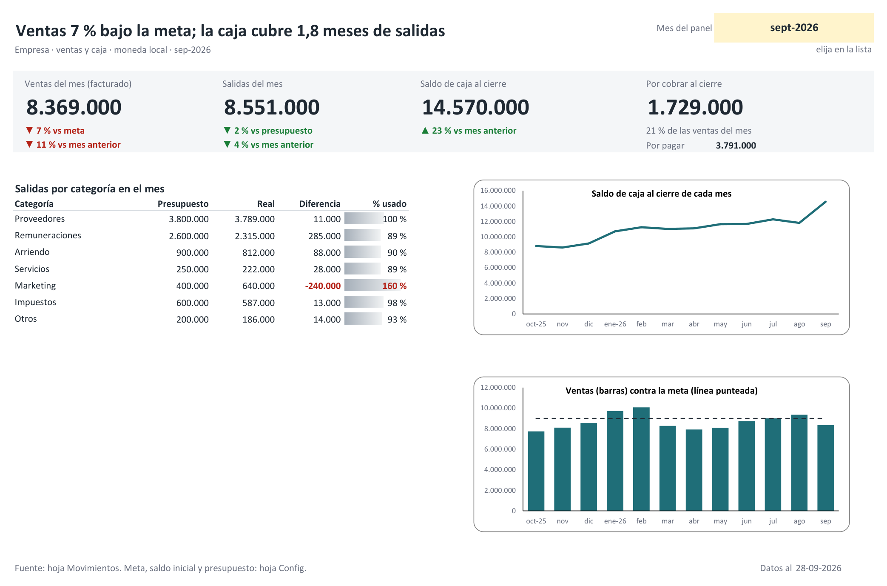

El estado de resultados dice si el negocio gana plata. El flujo de caja responde otra pregunta: si el día de pago va a haber dinero en la cuenta. No es lo mismo. La factura se emitió hoy, el cliente paga a 60 días y los sueldos se pagan este mes; en el papel hay utilidad y en el banco no hay con qué.
Lo que sigue es el método completo, con las fórmulas escritas. No pide contabilidad ni macros. Pide anotar cada movimiento, y esa es la única parte difícil.
Lo corto
- Una sola tabla de movimientos: una fila por cada entrada o salida, con fecha, categoría, monto y estado (pagado o pendiente).
- Un resumen por mes que suma solo lo pagado. El saldo final es el saldo inicial más las entradas menos las salidas, y pasa a ser el saldo inicial del mes siguiente.
- Las ventas facturadas se miran en una fila aparte de la caja cobrada.
- Lo pendiente, anotado con la fecha en que se espera, es la proyección. No hay que armar otra planilla.
Antes de abrir Excel: qué cuenta como caja
Caja es el dinero que entró o salió de verdad de las cuentas de la empresa, sea el banco o el efectivo. Una factura emitida todavía no es caja. Una compra a 30 días tampoco es una salida hasta el día en que se paga.
De ahí salen tres reglas que evitan casi todas las dudas. Los montos se anotan como se mueven en la cuenta, con los impuestos incluidos, y el pago mensual de impuestos va como una salida más en su propia categoría. Los retiros del dueño son salidas. Y la depreciación no existe en esta planilla, porque nadie la paga.
Paso 1. La tabla de movimientos
En una hoja llamada Movimientos, una fila por movimiento y estas columnas:
| Columna | Qué va |
|---|---|
| Fecha | El día en que el dinero se movió, o en que se espera que se mueva |
| Concepto | Texto libre: «Factura 1042», «Arriendo de octubre» |
| Tipo | Entrada o Salida |
| Categoría | De una lista corta (paso 2) |
| Monto | Siempre positivo; el sentido lo da el Tipo |
| Cliente o proveedor | Para saber después a quién cobrarle |
| Estado | Pagado o Pendiente |
Seleccione el rango y conviértalo en tabla con Ctrl + T. En la pestaña de diseño
de la tabla, cámbiele el nombre a Mov. Con eso las fórmulas del resumen se refieren a
las columnas por su nombre y alcanzan solas las filas nuevas; no hay que estirar rangos cada
mes.
El monto va siempre en positivo. Mezclar signos en la misma columna parece más corto y termina en una salida digitada sin el menos, que la planilla suma como si fuera plata que entró.
Paso 2. Pocas categorías, elegidas de una lista
Con siete u ocho categorías de salida alcanza para una empresa chica: proveedores, remuneraciones, arriendo, servicios, marketing, impuestos y otros. En las entradas conviene separar las ventas de lo que no es venta: otros ingresos, aportes de socios y préstamos. Un mes en que la caja sube porque entró un crédito no fue un buen mes, y si todo está en la misma categoría la planilla no lo distingue.
Escriba las categorías en una hoja aparte y úselas como lista desplegable en la columna Categoría (Datos > Validación de datos > Lista). Lo mismo con Tipo y Estado. La lista no es un detalle de comodidad: «Proveedores» y «Proveedor» escritos a mano son dos categorías distintas para una fórmula, y la suma queda corta sin avisar.
Paso 3. El saldo inicial
Elija una fecha de partida, sume lo que había ese día en las cuentas y en el efectivo, y anote ese número. Nada anterior a esa fecha entra a la tabla. Si parte el primer día de un mes, mejor: el primer resumen sale completo.
Paso 4. El resumen por mes
En una hoja Resumen, la fila 1 lleva los meses hacia la derecha. Escriba en
B1 el primer día del primer mes como fecha (por ejemplo, 01-07-2026), en
C1 la fórmula =FECHA.MES(B1;1) y cópiela hacia la derecha. Un formato de
celda mmm-aa las muestra como «jul-26». Debajo van cinco filas: saldo inicial,
entradas, salidas, flujo del mes y saldo final.
Las entradas del mes, en B3:
=SUMAR.SI.CONJUNTO(Mov[Monto];Mov[Tipo];"Entrada";Mov[Estado];"Pagado";
Mov[Fecha];">="&B$1;Mov[Fecha];"<="&FIN.MES(B$1;0))Dice: sume los montos que sean entradas, que estén pagados y cuya fecha caiga entre el primer
y el último día del mes de B1. Las salidas, en B4, son la misma fórmula
con "Salida". El resto es aritmética:
- Flujo del mes, en
B5:=B3-B4 - Saldo final, en
B6:=B2+B5 - Saldo inicial del mes siguiente, en
C2:=B6
En B2 va el saldo inicial del paso 3. Copie la columna hacia la derecha y tiene
el flujo de caja de todos los meses. En Excel en inglés las funciones se llaman
SUMIFS, EOMONTH y EDATE; si su configuración regional separa
los argumentos con coma, cambie cada punto y coma por una coma.
Con tres meses de un ejemplo inventado se ve así:
| Jul | Ago | Sep | |
|---|---|---|---|
| Saldo inicial | 4.000.000 | 4.700.000 | 3.900.000 |
| Entradas cobradas | 7.200.000 | 6.100.000 | 8.000.000 |
| Salidas pagadas | 6.500.000 | 6.900.000 | 7.100.000 |
| Flujo del mes | 700.000 | -800.000 | 900.000 |
| Saldo final | 4.700.000 | 3.900.000 | 4.800.000 |
Paso 5. Venta no es caja
Agosto es el mes que importa en ese ejemplo. La caja bajó 800.000. Suponga que ese mismo mes la empresa facturó 8.400.000, más que en julio y que en septiembre. Quien mire solo las ventas celebra; quien mire solo la caja se asusta. Hacen falta las dos filas, una al lado de la otra.
Las ventas facturadas del mes son la misma fórmula, sin la condición de estado y limitada a la categoría de ventas:
=SUMAR.SI.CONJUNTO(Mov[Monto];Mov[Categoría];"Ventas";
Mov[Fecha];">="&B$1;Mov[Fecha];"<="&FIN.MES(B$1;0))Y lo que está por cobrar, todo lo que sea entrada y siga pendiente:
=SUMAR.SI.CONJUNTO(Mov[Monto];Mov[Tipo];"Entrada";Mov[Estado];"Pendiente")Cambiando "Entrada" por "Salida" sale lo que está por pagar.
Para que esto funcione, cada factura se anota el día en que se emite, con estado Pendiente. Cuando el cliente paga, se cambia a Pagado y se corrige la fecha al día en que el dinero entró. Ese cambio de fecha es el paso que más se olvida. Sin él, un cobro de septiembre queda sumado en agosto y el saldo de la planilla deja de parecerse al del banco.
Paso 6. Lo pendiente es la proyección
No hace falta una segunda planilla para proyectar. Si las facturas por cobrar tienen la fecha
en que se espera el pago, y los sueldos, el arriendo y los impuestos de los próximos meses están
anotados por adelantado como pendientes, el resumen ya sabe lo que viene. Agregue dos filas con
la fórmula del paso 4 y el estado "Pendiente", una para entradas y otra para
salidas. En los meses futuros, el saldo proyectado es el saldo final anterior más las entradas
esperadas menos las salidas comprometidas.
Un número resume el estado de la caja: cuántos meses de salidas cubre. Es el saldo final dividido por el promedio de salidas de los últimos tres meses. En el ejemplo, 4.800.000 contra un promedio de 6.833.000 da 0,7 meses, unas tres semanas.
No hay una cifra correcta para todos. Un negocio que cobra al contado vive tranquilo con menos caja que uno que cobra a 60 días. Lo que sirve es mirar hacia dónde se mueve ese número de un mes a otro.
La rutina que lo mantiene vivo
Una vez por semana, con el estado de cuenta del banco al lado: anotar los movimientos nuevos, pasar a Pagado lo que se cobró o se pagó, y comparar el saldo de la planilla con el del banco. Tienen que ser iguales. Si no lo son, falta un movimiento o sobra uno, y se encuentra en minutos porque solo hay una semana que revisar.
Esa comparación es lo que hace confiable la planilla. Un flujo de caja que no se compara con el banco se va desviando de a poco, y el día en que hace falta para decidir algo ya nadie le cree.
Errores que lo arruinan
- Dejar la fecha de la factura en lo cobrado. La caja queda en el mes equivocado.
- Mezclar la cuenta personal con la de la empresa. Si se paga algo del negocio con plata propia, se anota como aporte de socios y como salida; si no, el saldo nunca va a calzar.
- Olvidar los pagos que no son mensuales. Seguros, patentes, impuestos anuales, aguinaldos. Se anotan como pendientes apenas se conocen, aunque falten meses.
- Usar «Otros» para todo. Cuando esa categoría es de las más grandes, hay una categoría que falta.
Preguntas frecuentes
¿Cuál es la diferencia entre el flujo de caja y el estado de resultados?
El estado de resultados registra la venta cuando se factura y el gasto cuando se incurre; el flujo de caja los registra cuando el dinero entra o sale de la cuenta. Por eso una empresa puede tener utilidad en el mes y, al mismo tiempo, menos dinero que al empezar.
¿Conviene llevar el flujo de caja por semana o por mes?
Se anota por movimiento, con su fecha, y así la planilla puede resumirse por mes o por semana sin volver a digitar. El resumen mensual basta mientras la caja cubra más de un par de meses de salidas. Cuando la caja está justa conviene mirar las próximas semanas, porque dentro de un mes que cierra bien puede haber una semana en rojo.
¿Sirve este método en Google Sheets?
Sí. La fórmula es la misma, SUMAR.SI.CONJUNTO o SUMIFS, y
FIN.MES o EOMONTH. Si no usa una tabla con nombre, reemplace
Mov[Monto] por el rango de la columna, por ejemplo
Movimientos!E2:E5000, y lo mismo con las demás columnas.
Para seguir. Si prefiere ver la mecánica funcionando antes de armarla, hay una planilla gratuita armada con la misma idea: una tabla de movimientos y un resumen del mes que se calcula solo. Está pensada para el hogar, pero la mecánica es la de este artículo: Presupuesto mensual simple, gratis.
Y si quiere el flujo de caja ya armado, con panel de una pantalla (ventas contra la meta, saldo de caja de 12 meses, salidas contra presupuesto y lo que falta por cobrar y por pagar), está en Flujo de caja y ventas para pyme, por USD 9. Funciona en Excel y en Google Sheets, sin macros.

Para las cuentas de la casa, el método es parecido y está en Presupuesto del hogar en Excel paso a paso.